JVM结构
JVM（hotspot）结构概览如下图所示：
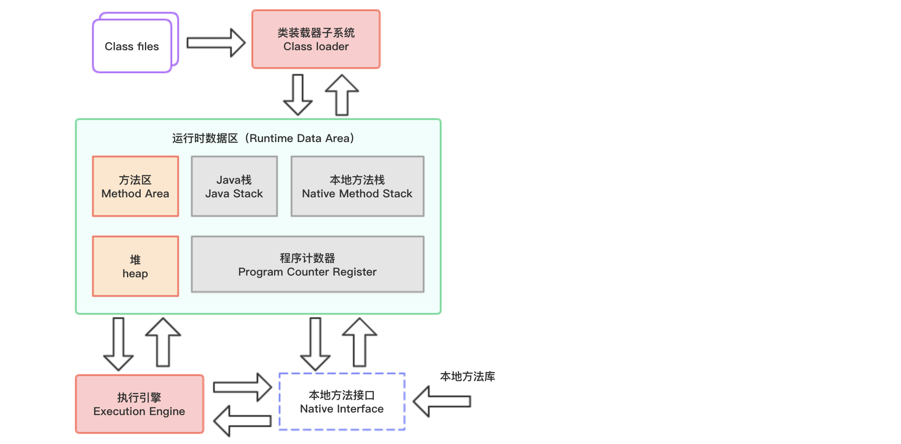
上图中，灰色部分（Java栈，本地方法栈和程序计数器）是线程私有，不存在线程安全问题，橙色部分（方法区和堆）为线程共享区。
类加载器
类加载器(Class Loader)负责加载class文件，class文件在文件开头有特定的标识。类加载器将class文件字节码内容加载到内存中，并将这些内容转换成方法区中的运行时数据结构。ClassLoader只负责class文件的加载，至于它是否可以运行，则由执行引擎Execution Engine决定。类加载示意图：
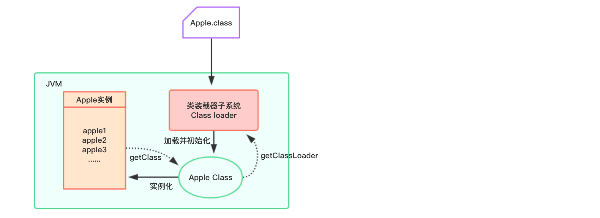
类加载器识别的class文件除了是.class格式外，文件的开头还得有特殊的标识，使用文本编辑器打开一个class格式的文件：
1 | cafe babe 0000 0034 0010 0a00 0300 0d07 |
这个特定的标识就是十六进制字符cafe babe。
类加载器分类
类加载器分为4种：
启动类加载器
启动类加载器BootstrapClassLoader也叫根加载器，是虚拟机自带的加载器，底层由C++实现，用于加载$JAVA_HOME/jre/lib/rt.jar包内的class文件。rt.jar是Java基础类库，包含Java运行环境所需的基础类：
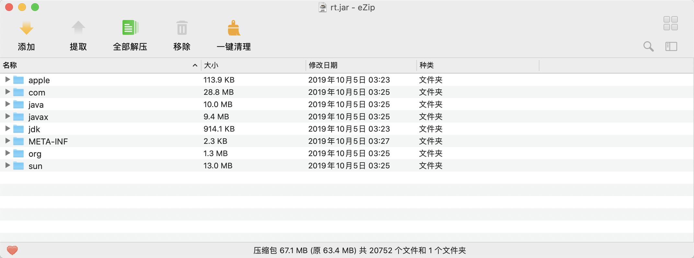
举个例子：
1 | public class Test { |
Object为Java自带的类，运行结果如下：
1 | null |
并没有返回预期的BootstrapClassLoader，这是因为BootstrapClassLoader底层是由C++实现的，并非Java实现。
拓展类加载器
拓展类加载器ExtClassLoader是虚拟机自带的加载器，由Java语言实现，用于加载$JAVA_HOME/jre/lib/ext/**.jar目录下的class文件：
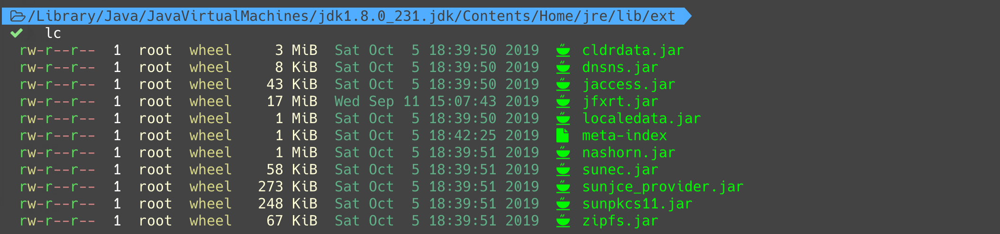
这部分主要是Java在迭代过程中，一些拓展的功能。
比如：
1 | public class Test { |
ZipInfo是$JAVA_HOME/jre/lib/ext/zipfs.jar包里的一个类，程序运行结果如下：
1 | sun.misc.Launcher$ExtClassLoader@5e2de80c |
应用程序类加载器
应用程序类加载器AppClassLoader是虚拟机自带的加载器，用于加载当前应用的classpath的所有类，也就是我们自己写的那些Java代码，比如：
1 | public class Test { |
程序运行结果：
1 | sun.misc.Launcher$AppClassLoader@18b4aac2 |
用户自定义加载器
除了使用上面三种JVM自带的类加载器外，我们也可以通过继承Java.lang.ClassLoader抽象类自定义一个类加载器。
这四种类加载器的关系如下图所示：
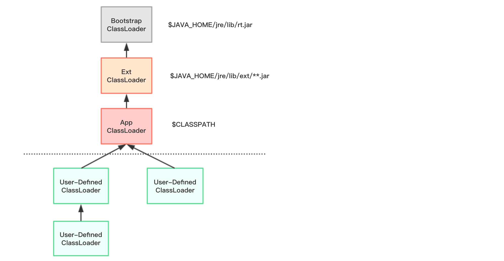
它们的关系是一种父子关系，我们可以通过代码验证：
1 | public class Test { |
程序运行结果如下所示：
1 | sun.misc.Launcher$AppClassLoader@18b4aac2 |
类加载步骤
类的加载过程分为三个步骤：
加载Loading
通过一个类的全类名获取其二进制字节流，将这个二进制流代表的静态存储结构转化为方法区的运行时数据结构，然后在内存中生成一个代表这个类的java.lang.Class对象，作为方法区中这个类的各种数据的访问入口。
链接Linking
该过程又可以分为三个阶段：验证Verfication，准备Preparation和解析Resolution）。
- 验证阶段用于确保加载的Class文件的字节流包含的信息是否符合虚拟机要求，保证其正确性合法性；
- 准备阶段为类变量（static修饰的变量）分配内存并根据对象类型设置相应的默认初始值（比如int类型为0，Integer类型为null）。这里不包含常量，因为常量在编译的时候分配，准备阶段会显示初始化。类的实例变量不会在这个阶段准备初始化。
解析阶段用于将符号引用转换为直接引用。
观察如下代码：
1
2
3
4
5
6
7public class Test {
public static void main(String[] args) {
String str = "hello";
System.out.println(str);
}
}使用javap -v命令查看其字节码：
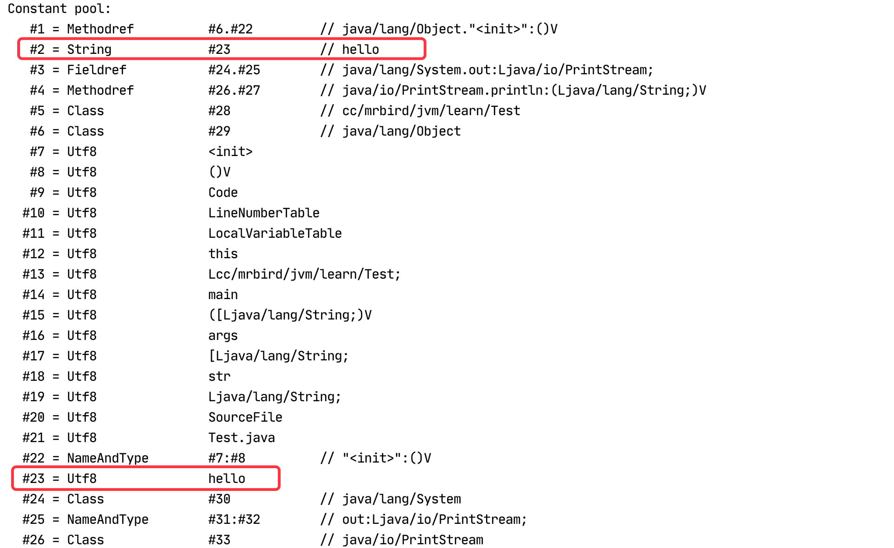
可以看到常量池中有许多符号引用（比如#2），解析阶段就是将其解析为直接引用（比如#2表示字符串常量hello）的过程。
初始化Initialization
该阶段就是执行类的构造器方法
<clinit>()的过程 ；该方法并不是类的构造器，不需要我们自己定义，是javac编译器自动搜集类中的所有类变量的赋值动作和静态代码块中的语句合并而来；创建一个简单的类，包含一个名为aaa的类变量：
1
2
3
4
5
6
7
8
9
10
11
12public class Test {
private static int aaa = 1;
static {
aaa = 200;
}
public static void main(String[] args) {
System.out.println(Test.aaa);
}
}然后通过IDEA的jclasslib插件查看该类的class文件对应的字节码：
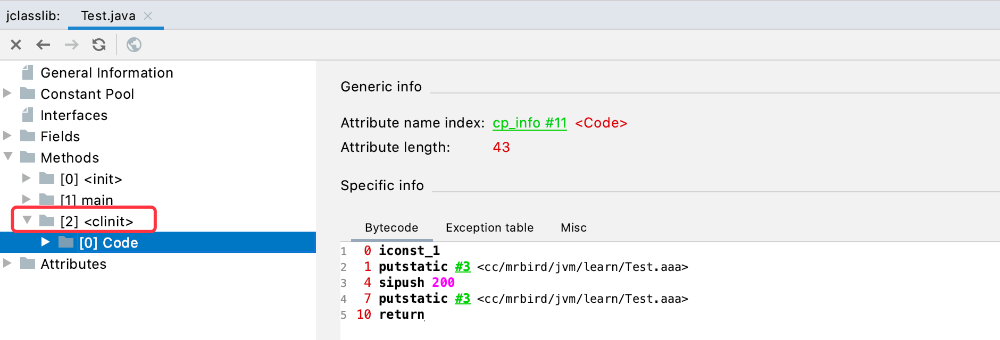
可以看到上面所说的构造器方法
<clinit>()，指令的操作就是为所有类变量赋值以及静态代码块中的操作。换句话说，如果一个类不包含类变量和静态代码块，那么它的字节码中就不会有构造器方法<clinit>()。构造器方法中的指令按照语句在源代码中出现的顺序执行；
观察如下代码：
1
2
3
4
5
6
7
8
9
10
11
12
13
14
15public class Test {
private static int aaa = 1;
static {
aaa = 200;
bbb = 300;
}
private static int bbb = 2;
public static void main(String[] args) {
System.out.println(Test.bbb);
}
}上面程序输出结果为2，因为构造器方法中的指令按照语句在源代码中出现的顺序执行，查看构造器方法
<clinit>()指令来证明这一点：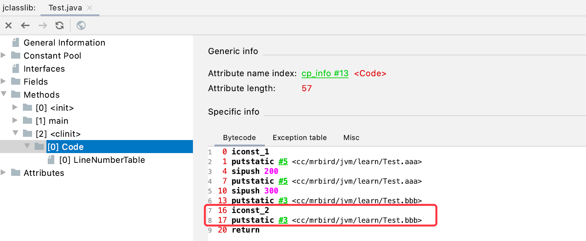
这里还有一个细节，就是为什么在静态代码块下面才定义的类变量bbb，在静态代码块中可以进行修改呢？这就是Linking阶段中准备阶段所做的事情，准备阶段为类变量（static修饰的变量）分配内存并根据对象类型设置相应的默认初始值。这个时候bbb已经被分配并赋予默认初始值了，所以static块中可以使用该变量（换句话说，实例变量不行）。
1
2
3
4
5
6
7
8
9
10
11
12
13
14
15
16public class Test {
private static int aaa = 1;
static {
aaa = 200;
System.out.println(Test.bbb);
bbb = 300;
}
private static int bbb = 2;
public static void main(String[] args) {
System.out.println(Test.bbb);
}
}上面输出0 2。
下面代码直接编译失败：
1
2
3
4
5
6
7
8
9
10
11
12
13
14
15
16
17public class Test {
private static int aaa = 1;
static {
aaa = 200;
System.out.println(Test.bbb);
bbb = 300;
ccc = 400;
}
private static int bbb = 2;
private int ccc = 3;
public static void main(String[] args) {
System.out.println(Test.bbb);
}
}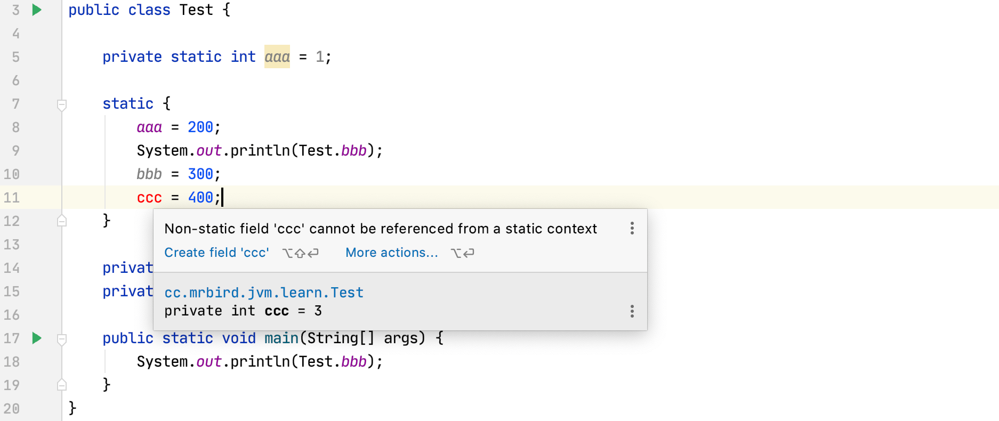
因为ccc还没分配初始化呢。
若该类包含父类，那么JVM会保证父类的
<clinit>()先执行完毕；虚拟机会保证一个类的
<clinit>()方法在多线程下被同步加锁。观察如下代码：
1
2
3
4
5
6
7
8
9
10
11
12
13
14
15
16
17
18
19
20
21
22
23
24
25public class Test {
public static void main(String[] args) {
Runnable r = () -> {
System.out.println(Thread.currentThread().getName() + "开始");
new Hello();
System.out.println(Thread.currentThread().getName() + "结束");
};
new Thread(r, "线程1").start();
new Thread(r, "线程2").start();
}
}
class Hello {
static {
if (true) {
System.out.println(Thread.currentThread().getName() + "初始化当前类");
while (true) {
}
}
}
}程序启动后，main线程启动两个子线程，控制台输出如下：
1
2
3线程1开始
线程2开始
线程1初始化当前类然后程序block住，这说明了虚拟机会保证一个类的
<clinit>()方法在多线程下被同步加锁。
双亲委派机制
聊到类加载器不得不提的另一个话题就是双亲委派机制，在了解什么是双亲委派机制之前，我们先来看个例子：
在src/main/java目录下新建java.lang包，然后在该包下新建一个String类：
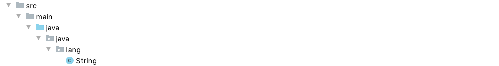
String类的代码如下所示：
1 | package java.lang; |
程序输出结果：
1 | 错误: 在类 java.lang.String 中找不到 main 方法, 请将 main 方法定义为: |
所以上面的例子中，AppClassLoader委派给它的父类ExtClassLoader去加载，ExtClassLoader又委托给它的父类BootstrapClassLoader去加载。BootstrapClassLoader从它的加载路径$JAVA_HOME/jre/lib/rt.jar下找到了java.lang.String类，即rt.jar包下的String类，而该类里并没有main方法，所以便抛出了如上异常。
程序计数器
程序计数器(Program Counter Register)又叫PC寄存器。每个线程都有一个程序计数器，是线程私有的。它是一个指针，指向方法区中的方法字节码，用来存储指向下一条指令的地址，也即将要执行的指令代码，由执行引擎读取下一条指令，是一个非常小的内存空间，几乎可以忽略不记。
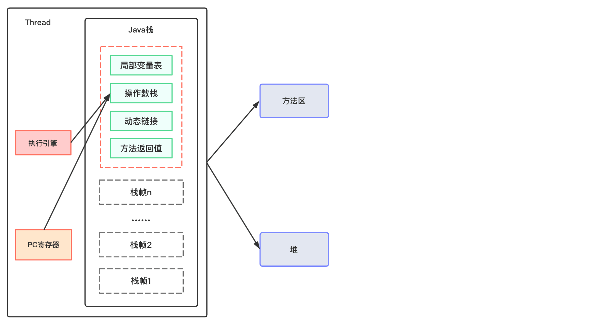
如果执行的是一个Native方法，那这个计数器的值为undefied。
为什么需要程序计数器呢？因为CPU需要不停地切换各个线程，有了程序计数器后，当CPU切换回来后，我们就可以知道接着从哪开始继续执行程序，举个例子，现有如下代码：
1 | public class Test { |
查看其字节码：
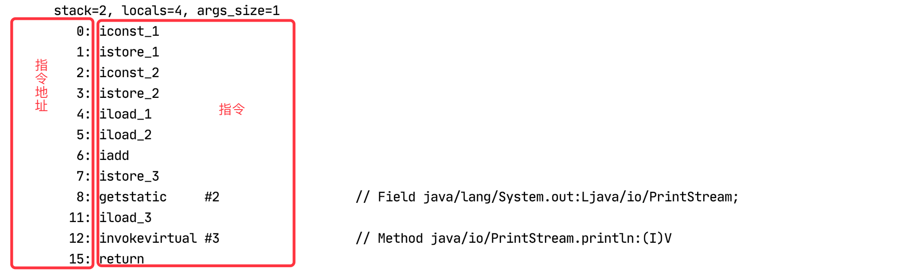
假如当前线程的程序计数器存储的指令地址为6，这时候CPU切换到别的线程中处理工作；一段时间后，当前线程重新获取了CPU时间片继续执行时，根据程序计数器存的6就知道，当前需要执行iadd（即a+b操作）指令。执行引擎会将这条指令翻译为机器指令，然后CPU执行该运算操作。
虚拟机栈（Java栈）
虚拟机栈也称为Java栈，每个线程在创建的时候都会创建一个虚拟机栈，其内部保存一个个栈帧（Stack Frame），对应着一次次的Java方法调用。和PC寄存器一样，虚拟机栈的生命周期和线程一致。虚拟机栈主管Java程序的运行，它保存方法的局部变量（8种基本数据类型，对象引用地址）、部分结果，并参与方法的调用和返回。
虚拟机栈示意图如下所示：
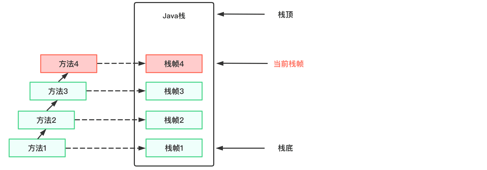
JVM对虚拟机栈的操作只有压栈（入栈）和出栈操作，遵循FILO原则；在一个活动线程中，一个时间点只会有一个活动的栈帧，即当前正在执行方法对应的栈帧（当前栈帧）；如果一个方法调用了另一个方法，那么对应的新的栈帧将会被创建出来，放在栈顶，成为新的当前栈帧。
编写一个简单代码，使用debug的方式来观察入栈和出栈操作：
1 | public class Test { |

可以看到，执行main方法后，main方法首先入栈，接着调用method1方法，method1方法入栈；method1调用method2，method2入栈；method2调用method3，method3入栈；method3调用method4，method4入栈；method4执行结束，正常退出，method4出栈；method4出栈后，当前栈帧变为method3对应的栈帧；method3执行结束正常退出，method3出栈……以此类推，最终main方法执行结束出栈，程序结束。
Java方法执行结束正常退出和抛出异常这两种情况会导致栈帧被弹出（退出）。
虚拟机栈大小调整
Java虚拟机规范允许虚拟机栈的大小固定不变或者动态扩展。
- 固定情况下：如果线程请求分配的栈容量超过Java虚拟机允许的最大容量，则抛出StackOverflowError异常；
- 可动态扩展情况下：尝试扩展的时候无法申请到足够的内存；或者在创建新的线程的时候没有足够的内存去创建对应的虚拟机栈，则会抛出OutOfMemoryError异常。
不同平台的虚拟机栈默认大小不同：
Linux/x64 (64-bit): 1024 KB
macOS (64-bit): 1024 KB
Oracle Solaris/x64 (64-bit): 1024 KB
Windows: 默认值取决于虚拟内存。
我们可以通过-Xss（-XX:ThreadStackSize简写）设置虚拟机栈大小，默认单位为字节。也可以通过k或者K指定单位为KB，m或M指定单位为MB，g或G指定单位为GB。下面这组配置都是将虚拟机栈大小设置为1024KB：
1 | -Xss1m |
虚拟机栈越大，方法调用深度越深，举个例子：
1 | public class Test { |
在macOS平台下，虚拟机栈的默认大小为1024KB，程序运行结果如下：
1 | ...... |
程序输出10824后抛出StackOverflowError；
我们通过-Xss200k命令将虚拟机栈大小调整为200KB再观察输出结果：
1 | ...... |
可以看到，方法调用深度明显变小了。
栈帧内部结构
每个栈帧包含5个组成部分：局部变量表（Local Variables）、操作数栈（Operand Stack）、动态链接（Dynamic Linking）、方法返回地址（Return Address）和一些附加信息：
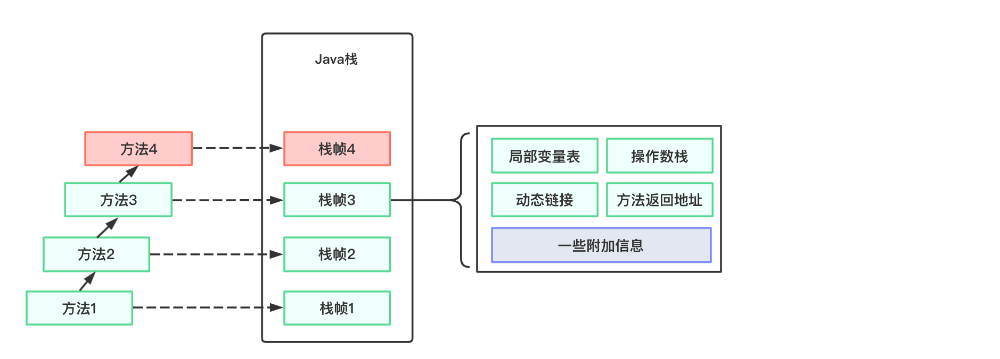
局部变量表
局部变量表是一个数字数组，用于存储方法参数和方法体内的局部变量。
下面Test类包含hello静态方法：
1 | public class Test { |
使用javap -v命令查看其字节码：
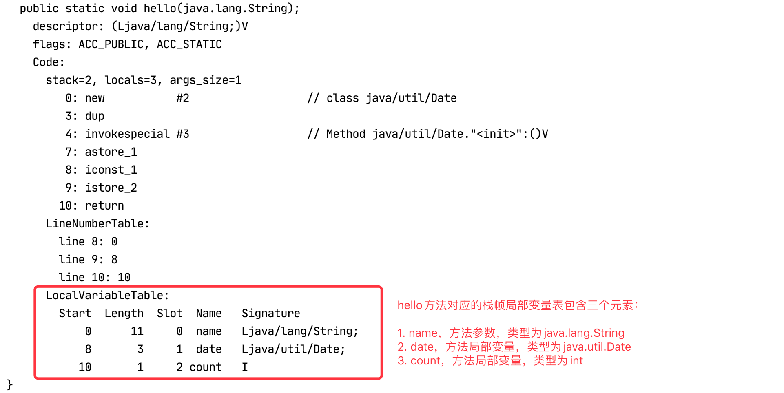
非静态方法的局部变量表和静态方法相比，多了个this对象（即当前类）：
1 | public class Test { |
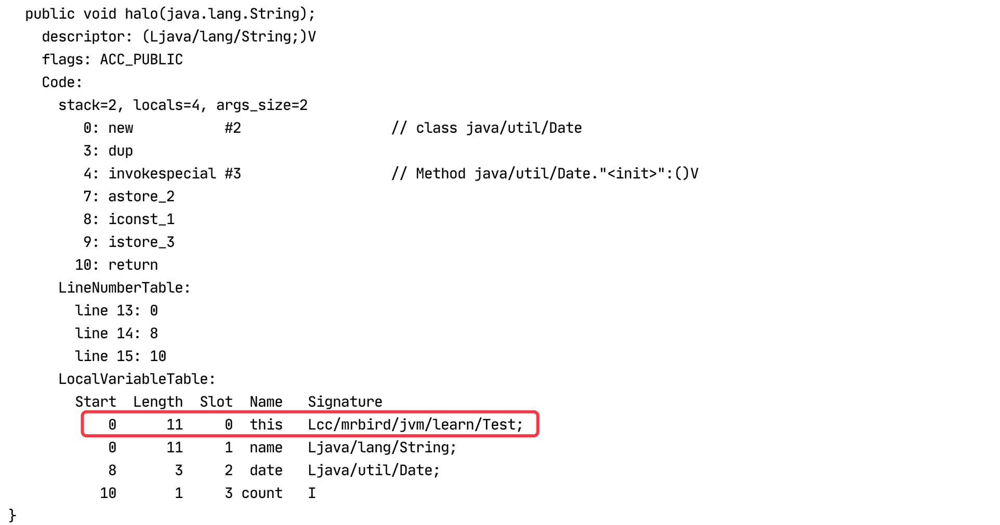
可以看到，非静态方法的局部变量表首位就存放了this对象，这也是静态方法内无法使用this的原因（因为静态方法的局部变量表中没有this对象）。
局部变量表数组容量的大小在编译期就可以唯一确定下来，并保存在方法的Code属性的maximum locacl variables数据项中，就拿上面Test类的hello方法来说，其字节码里已经指明了局部变量表的大小：
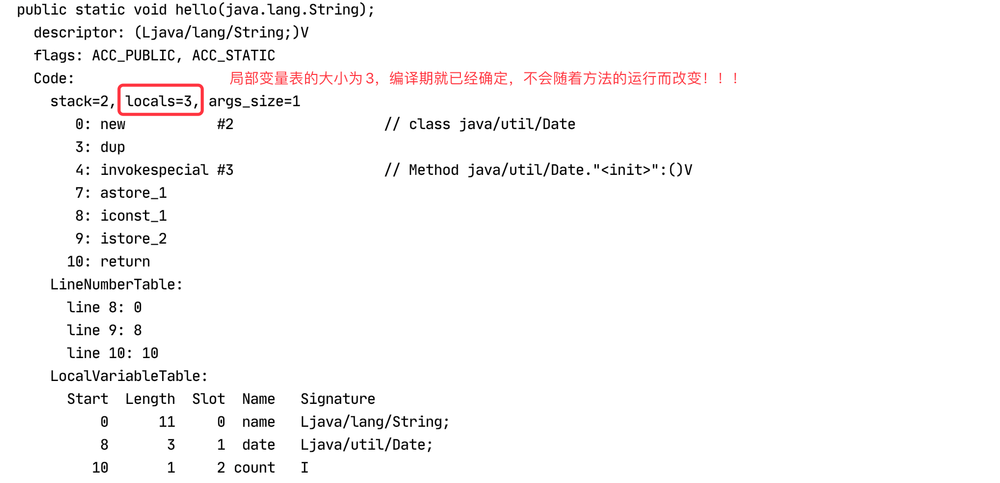
通过jclasslib插件也可以看到局部变量表的大小：
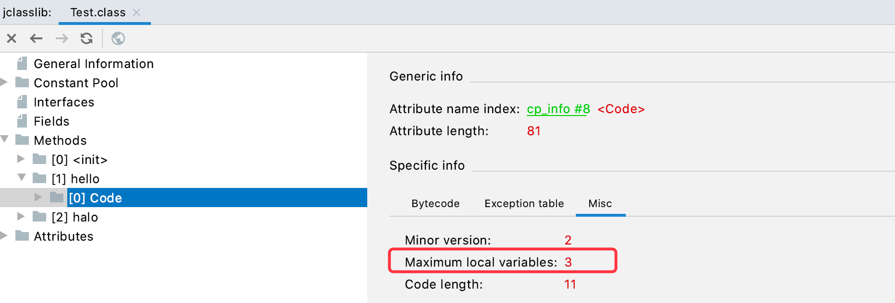
局部变量表的最基本单元是变量槽（Slot）。局部变量表中32位以内的数据类型（除long和double外）只占用一个slot，64位类型（long和double）占用两个slot。举个例子：
1 | public class Test { |
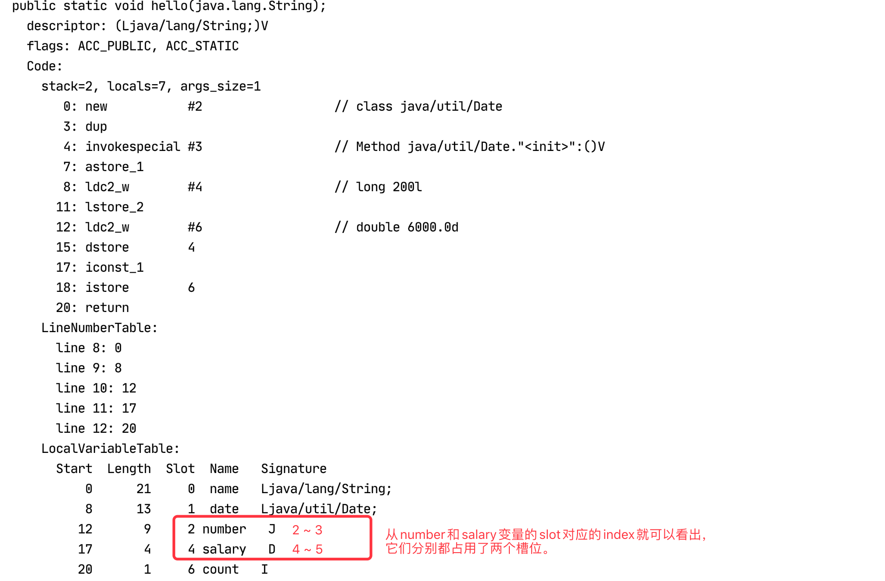
此外，通过局部变量表包含的信息，我们还可以得出局部变量的作用范围。举个例子，当前有如下代码：
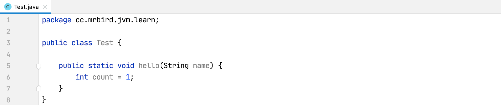
查看其字节码：
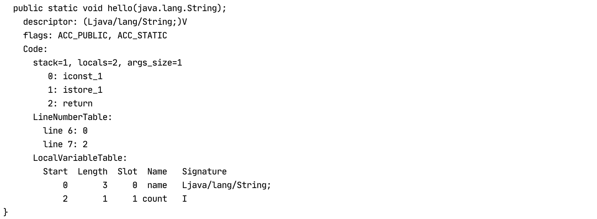
以方法参数name为例，查看LocalVariableTable，name参数对应的Start列的值为0，表示其在第0行字节码指令处生效（通过LineNumberTable我们可以知道，第0行字节码指令对应程序中的第6行代码）；Length列的值为3，说明name参数的有效作用域长度为3，因为name是在第0行字节码指令处生效的，所以name在0 ~ 2行字节码指令范围内有效（通过LineNumberTable的对应关系，我们也可以知道name在我们的代码中作用域范围为第6行到第7行）。
局部变量表的槽位是可以重复利用的，如果一个局部变量过了其作用域，那么在其作用域之后申明的新的局部变量很有可能会复用过期局部变量的槽位。举个例子，现有如下代码：
1 | public class Test { |
查看其局部变量表：
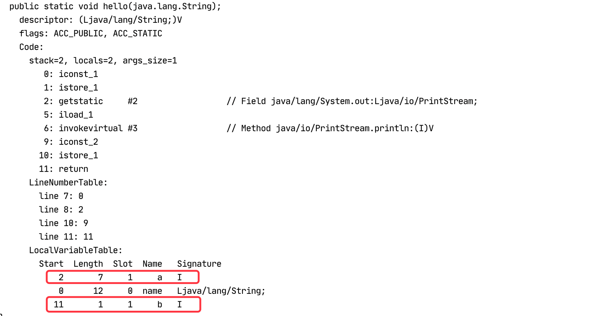
可以看到局部变量a和b的槽位都是1，说明槽位重复利用了。这是因为在定义局部变量b的时候，局部变量a已经出了作用域失效销毁了，但是局部变量表的槽位已经开辟了，所以局部变量b直接重复利用索引为1的槽位。
操作数栈
每一个独立的栈帧中除了包含局部变量表外，还包含一个FILO的操作数栈，用于保存计算过程中的中间结果，同时作为计算过程中变量临时的存储空间。每个操作数栈都有一个明确的深度，在编译期已经确定下来：
1 | public class Test { |
查看其字节码：
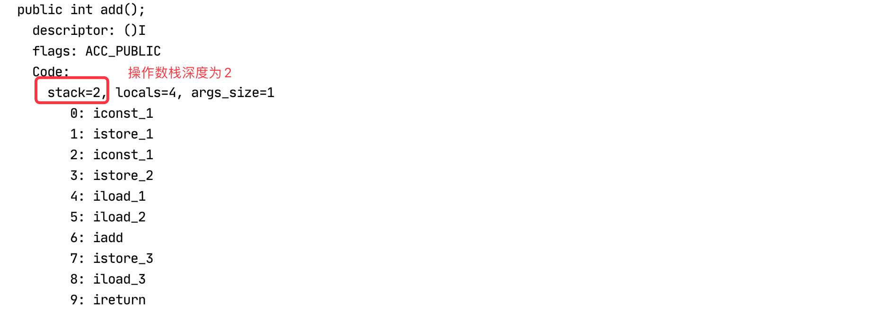
栈中的任何一个元素都可以是任意的Java数据类型，32bit的类型占用一个栈深度，64bit的类型占用两个栈单位深度：
1 | public class Test { |
查看其字节码：
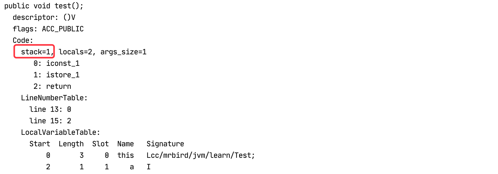
操作数栈深度为1。
将代码的局部变量a类型改为64bit的double类型：
1 | public class Test { |
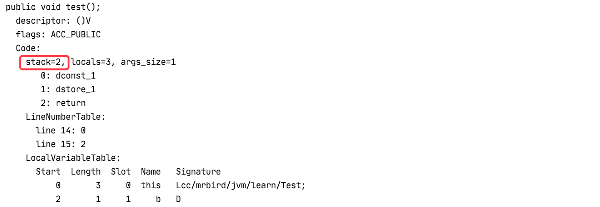
操作数栈深度为2。
操作数栈在方法的执行过程中，根据字节码指令往栈中写入数据或提取数据，即入栈和出栈操作。虽然栈是用数组实现的，但根据栈的特性，对栈中数据访问不能通过索引，而是只能通过标准的入栈和出栈操作来完成一次数据访问。
下面通过一个例子来感受PC寄存器，局部变量表和操作数栈是如何相互配合完成一次方法的执行，代码如下所示：
1 | public class Test { |
在查看字节码指令之前，先记录下几个入栈出栈的字节码指令含义：
- 当int取值 -1 ~ 5 采用iconst指令入栈；
- 取值 -128 ~ 127（byte有效范围）采用bipush指令入栈；
- 取值 -32768 ~ 32767（short有效范围）采用sipush指令入栈；
- 取值 -2147483648 ~ 2147483647（int有效范围）采用ldc指令入栈；
- istore，栈顶元素出栈，保存到局部变量表中；
- iload，从局部变量表中加载数据入栈。
更多字节码指令含义后续深入学习Java虚拟机字节码指令再说🌚。
上面方法对应的字节码如下：
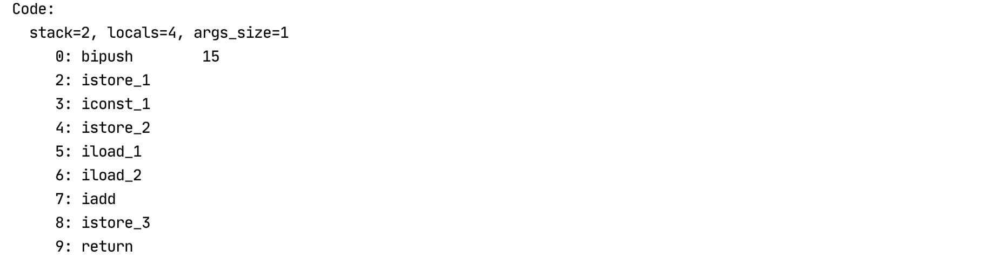
指令执行过程中，PC寄存器，局部变量表和操作数栈状态如下图所示：
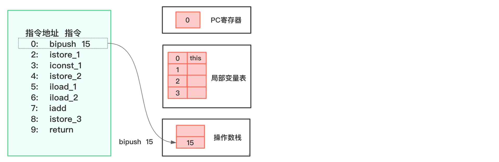
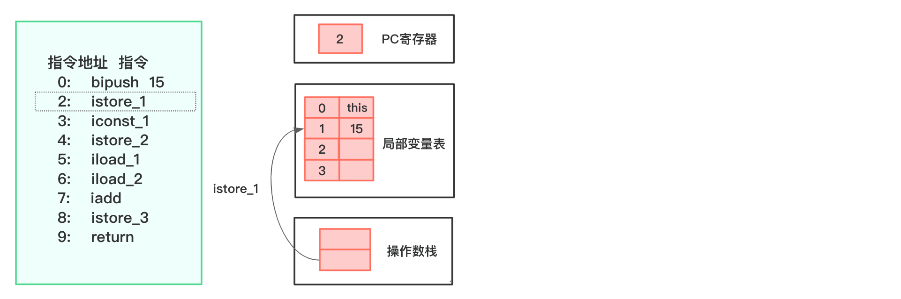
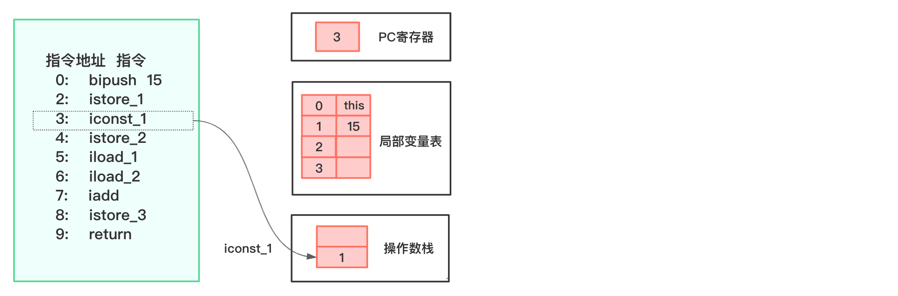
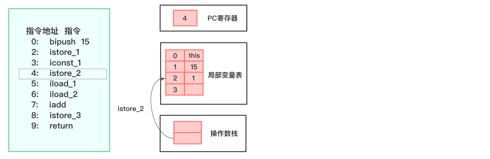
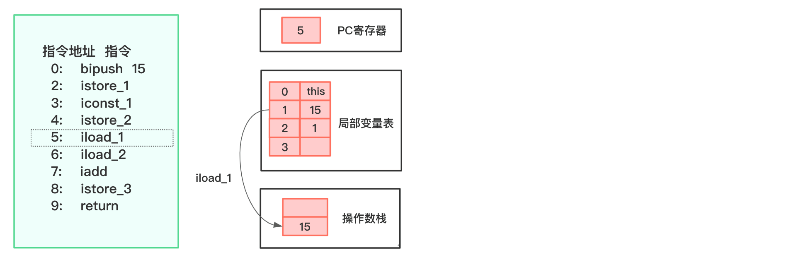
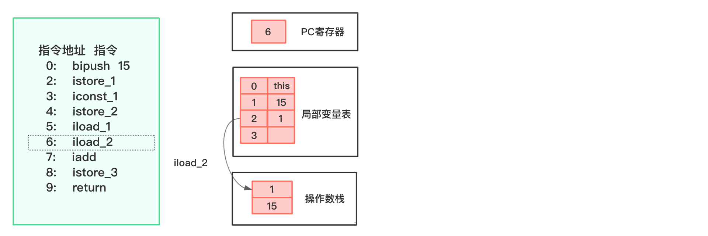
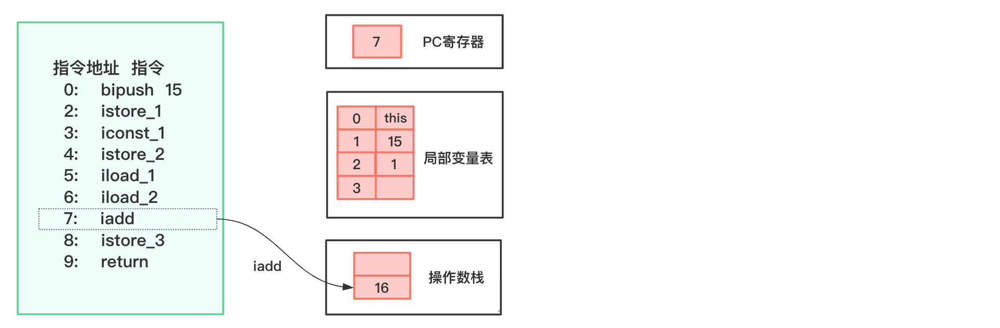
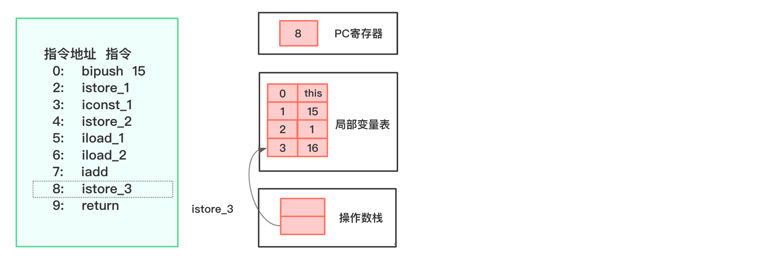
如果被调用的方法带有返回值的话，其返回值会被压入当前栈帧的操作数栈中。
动态链接
在Java源文件被编译成字节码文件时，所有的变量和方法引用都作为符号引用保存在class文件的常量池里，动态链接的作用就是为了将这些符号引用转换为调用方法的直接引用，比如：
1 | public class Test { |
其字节码中的常量池如下：
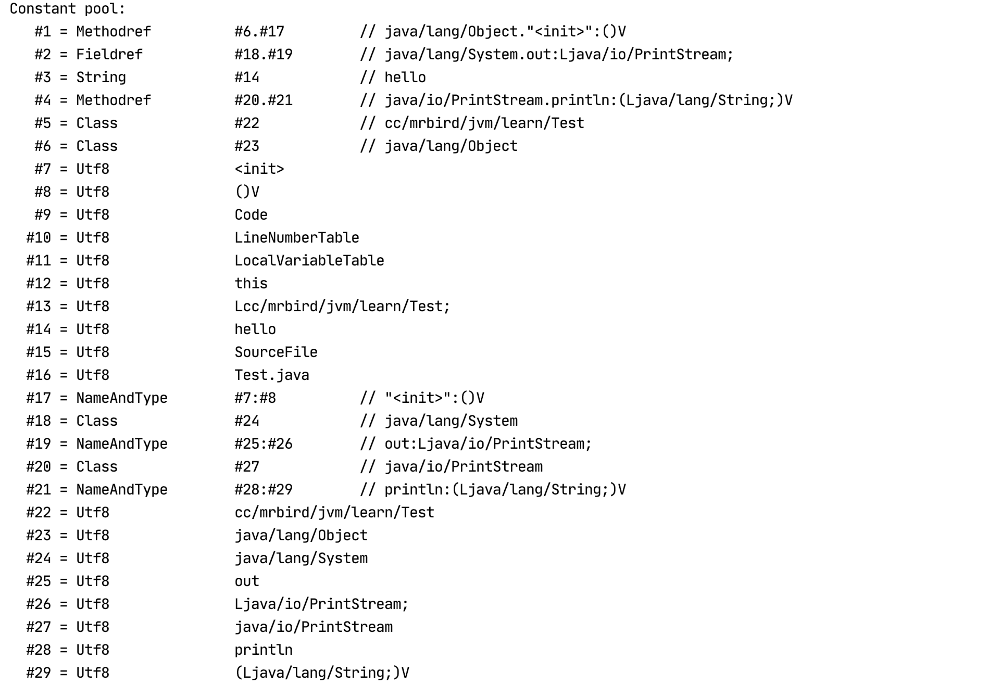
比如符号#27就表示为一个打印流。
方法返回地址
存放调用该方法的pc寄存器的值。一个方法的结束分为以下两种方式：
- 正常执行结束；
- 出现未处理异常，非正常退出。
无论是哪种方式退出，在方法退出后都返回到该方法被调用的位置。方法正常退出时，调用者的pc寄存器的值作为返回地址，即调用该方法的指令的下一条指令地址；异常退出时，返回地址需要通过异常表来确定。
一些附加信息
比如对程序调式提供的支持信息。
本地方法接口
本地方法接口(Native Interface)的作用是融合不同的编程语言为Java所用，它的初衷是融合C/C++程序。Java诞生的时候是 C/C++横行的时候，要想立足，必须调用 C/C++程序，于是就在内存中专门开辟了一块区域处理标记为native的代码。
比如查看java.lang.Thread类源码就会发现当中存在许多native方法：
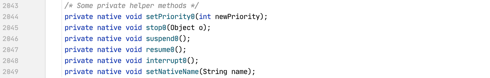
native方法没有方法体（因为不是Java实现），所以看上去像是“接口”一样，故得名本地方法接口。
本地方法栈
如前所述，虚拟机栈用于管理Java方法的调用，而本地方法栈则是用于管理本地方法的调用。
堆（Heap）
堆（Heap）一个JVM实例只存在一个堆内存，堆内存的大小是可以调节的。堆中保存着所有引用类型的真实信息，以方便执行器执行。堆在逻辑上分为三个区域：
Java7：
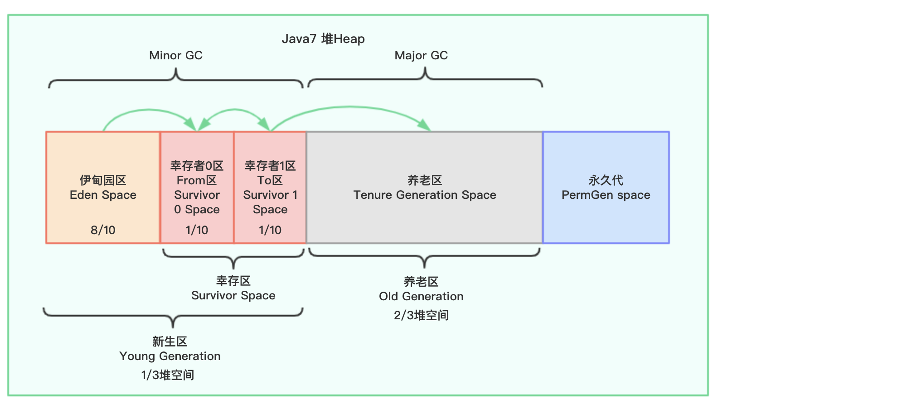
Java8：
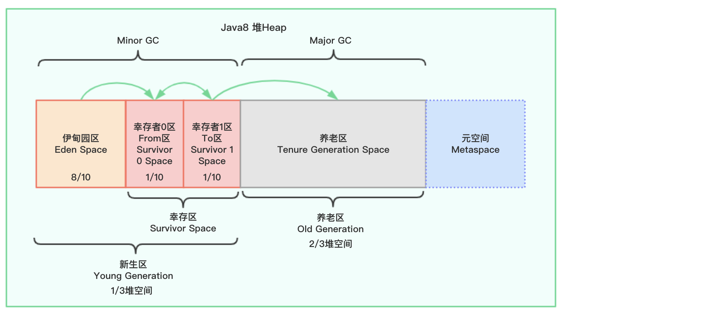
可以看到，在Java7时代，堆分为新生区（新生区包含伊甸园区和幸存区，幸存区又包含幸存者0区和幸存者1区。此外，幸存者0区又称为From区，幸存者1区又称为To区，From区和To区并不是固定的，复制之后交互，谁空谁是To），养老区和永久代；在Java8中，永久代已经被移除，被一个称为元空间的区域所取代。元空间的本质和永久代类似。
元空间与永久代之间最大的区别在于：永久代使用的JVM的堆内存，但是java8以后的元空间并不在虚拟机中而是使用本机物理内存（所以在上图中，我用虚线表示）。
堆空间对象分配过程
下面通过一个例子来讲述这几个区的交互逻辑：
1.几乎任何新的对象都是在伊甸园区被new出来创建，刚开始的时候两个幸存者区和养老区都是空的：
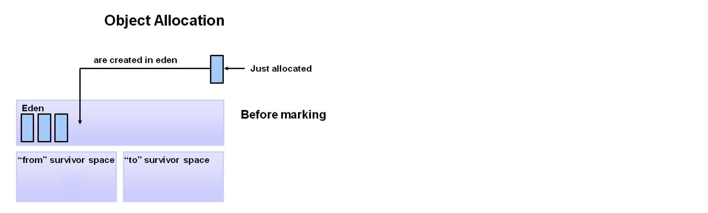
2.随着对象的不断创建，伊甸园区空间逐渐被填满：
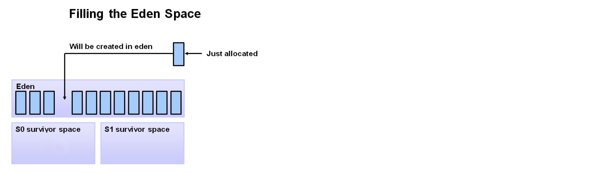
3.这时候将触发一次Minor GC（Young GC），删除未引用的对象，GC剩下来的还存在引用的对象将移动到幸存者0区，然后清空伊甸园区：
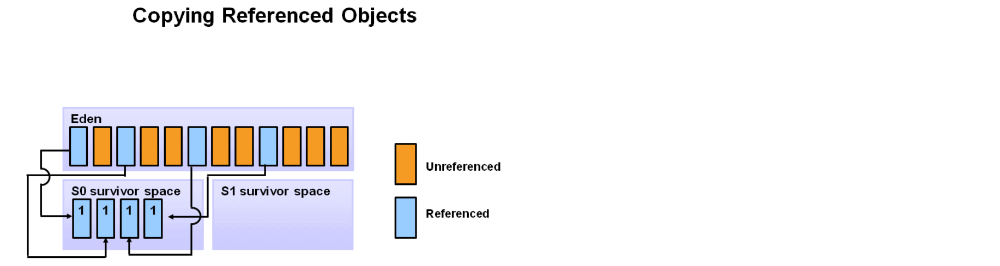
4.随着对象的创建，伊甸园区空间又满了，再一次触发Minor GC，删除未引用的对象，留下存在引用的对象。这次和上一次Minor GC有些不同，这轮GC留下的对象将被移动到幸存者1区，并且上一轮GC留下来的存储在幸存者0区的对象年龄递增并移动到幸存者1区。当所有幸存对象都移动到幸存者1区后，幸存者0区和伊甸园区空间清除：
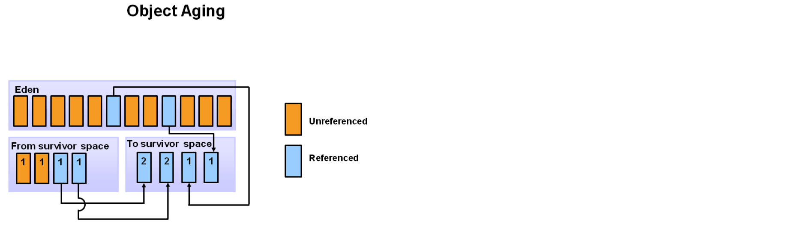
5.随着对象的创建伊甸园区空间再一次满了，触发了第三次Minor GC，这一次幸存区空间将发生互换，GC留下来的幸存者将移动到幸存者0区，幸存者1区的幸存对象年龄递增后也移动到幸存者0区，然后伊甸园区和幸存者1区的空间被清除：
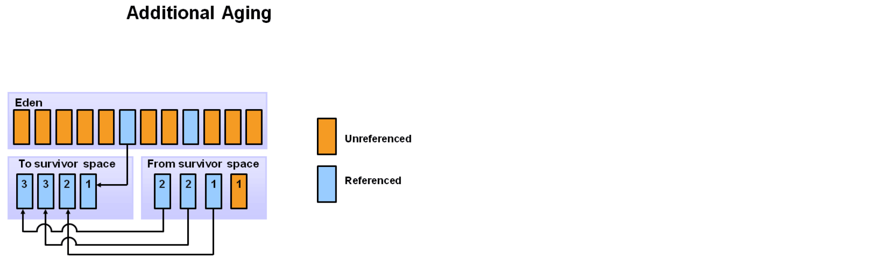
6.随着Minor GC的不断发生，幸存对象在两个幸存区不断地交换存储，年龄也不断递增。如此反反复复之后，当幸存对象的年龄达到指定的阈值（这个例子中是8，由JVM参数MaxTenuringThreshold决定）后，它们将被移动到养老区：
7.随着上述过程的不断出现，当养老区快满时，将触发Major GC（Full GC）进行养老区的内存清理。若养老区执行了GC之后发现依然无法进行对象的保存，就会产生OOM异常。
一个对象被放置到养老区除了它的年龄达到阈值外，以下几种情况也会使得该对象直接被放置到养老区：
- 对象创建后，无法放置到伊甸园区（比如伊甸园区的大小为10m，新的对象大小为11m，伊甸园区不够放，触发YGC。YGC后伊甸园区被清空，但还是无法容下11m的“超大对象”，所以直接放置到养老区。当然如果养老区放置不下则会触发FGC，FGC后还放不下则OOM）；
- YGC后，对象无法放置到幸存者To区也会直接晋升到养老区；
- 如果幸存区中相同年龄的所有对象大小大于幸存区空间的一半，年龄大于或等于这些对象年龄的对象可以直接进入养老区，无需等到年龄阈值。
堆参数
以JDK1.8+HotSpot为例，常用的可调整的堆参数有：
| 参数 | 含义 |
|---|---|
| -Xms，等价于-XX:InitialHeapSize | 设置堆的初始内存大小，默认为物理内存的1/64 |
| -Xmx，等价于-XX:MaxHeapSize | 设置堆的最大内存大小，默认为物理内存的1/4 |
| -XX:Newratio | 设置新生区和养老区的比例，比如值为2（默认值），则养老区是新生区的2倍，即养老区占据堆内存的2/3 |
| -XX:Surviorratio | 设置伊甸园区和一个幸存区的比例，比如值为8（默认值）则表示伊甸园区占新生区的8/10（两个幸存区是一样大的，8:1:1）； 如果设置为5，则比例为5:1:1，即伊甸园区占新生区5/7 |
| -Xmn | 设置堆新生区的内存大小（一般不使用） |
| -XX:MaxTenuringThreshold | 设置转入养老区的存活次数，默认值为15 |
| -XX:+PrintFlagsInitial | 查看所有参数的默认初始值 |
| -XX:+PrintFlagsFinal | 查看所有参数的最终值（被我们修改后的值不再是默认初始值） |
剩下所有可用参数可以查看oracle官方文档：https://docs.oracle.com/javase/8/docs/technotes/tools/unix/java.html。
生产环境中，推荐将-Xms和-Xmx设置为一样大，因为这样做的话在Java垃圾回收清理完堆区后不需要重新计算堆区大小，从而提高性能。此外，要在程序中输出详细的GC处理日志，可以使用-XX:+PrintGCDetails。
比如，我的电脑内存为32GB，所以堆的默认初始值大小为500MB左右，堆的最大值大约为8000MB左右：
1 | public class Test { |
程序输出：
1 | 堆内存的初始值491mb |
可以通过IDEA调整堆的大小：
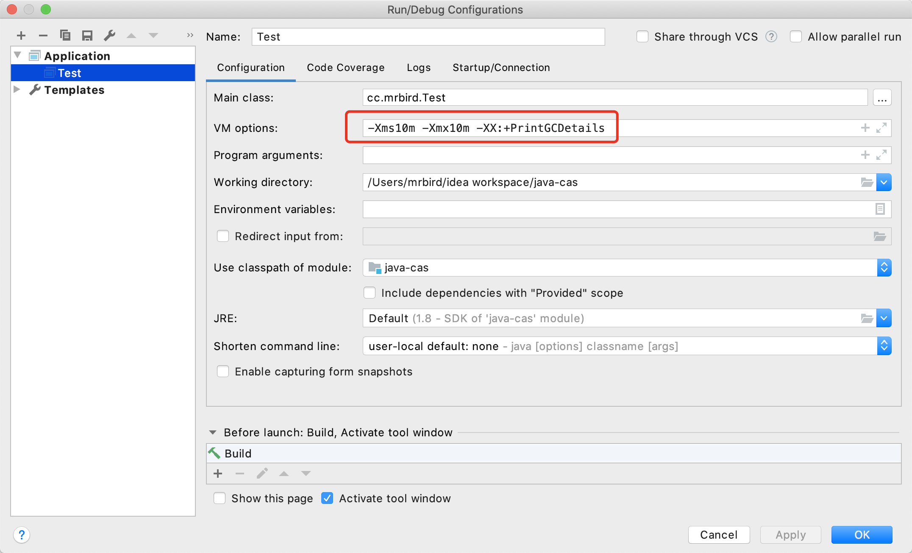
我们将堆内存的初始大小和最大值都设置为10mb，并且开启GC日志打印，重新运行下面这段程序：
1 | public class Test { |
输出如下所示：
1 | 堆内存的初始值9728kb |
可以看到，PSYoungGen（新生区）的总内存大小为2560k，ParOldGen（养老区）的总内存大小为7168k，总和刚好是9728K，这也说明了：Java8后的堆物理上只分为新生区和养老区，Metaspace（元空间）不占用堆内存，而是直接使用物理内存。
再举个OOM的例子，使用刚刚-Xms10m -Xmx10m -XX:+PrintGCDetails的设置，运行下面这段程序：
1 | public class Test { |
输出如下：
1 | [GC (Allocation Failure) [PSYoungGen: 1893K->491K(2560K)] 1893K->597K(9728K), 0.0007246 secs] [Times: user=0.01 sys=0.00, real=0.00 secs] |
可以看到，经过数次的GC和Full GC后，堆内存还是无法腾出空间，最终抛出OOM错误。日志的含义如下图所示：
Young GC（Minor GC）：
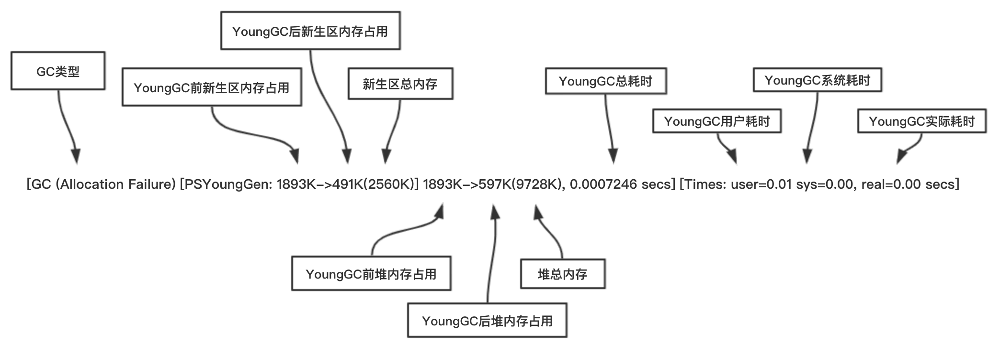
Full GC（Major GC）：
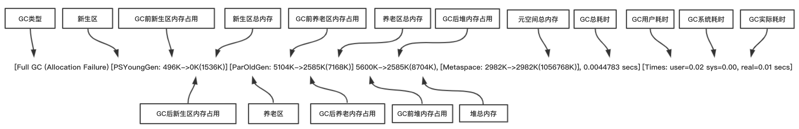
TLAB
JVM对伊甸园区继续进行划分，为每个线程分配了一个私有缓存区域，这块区域就是TLAB（Thread Local Allocation Buffer）。多线程同时分配内存时，使用TLAB可以避免一系列非线程安全问题，同时还能够提升内存分配的吞吐量。尽管不是所有的对象实例都能够在TLAB中成功分配内存，但JVM确实是将TLAB作为内存分配的首选：
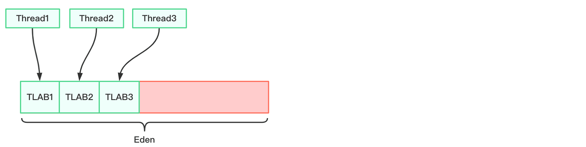
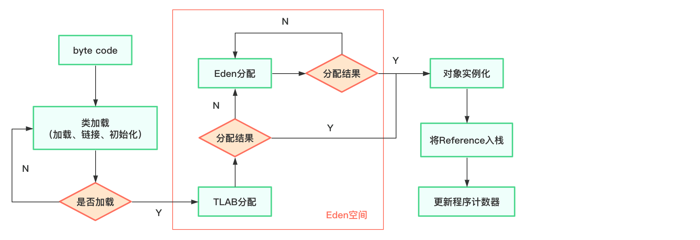
我们可以使用-XX:UseTLAB设置是否开启TLAB，举个例子：
1 | public class Test { |
运行main方法：
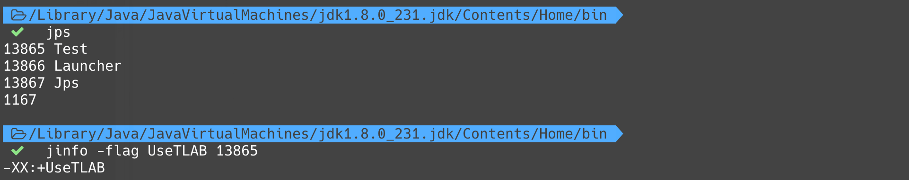
可以看到TLAB默认是开启的。
TLAB空间的内存非常小，仅占整个伊甸园区的1%，可以通过-XX:TLABWasteTargetPercent设置TLAB空间所占用伊甸园区空间的百分比。
有了TLAB的概念后，我们就不能说堆空间一定是线程共享的了。
方法区
方法区并不是所谓的存储方法的区域，而是供各线程共享的运行时内存区域。它存储了已被虚拟机加载的类型信息、常量、静态变量、即时编译器编译后的代码缓存等。
方法区也是一种规范，在不同虚拟机里头实现是不一样的，最典型的实现就是HotSpot虚拟机Java8之前的永久代(PermGen space)和Java8的元空间(Metaspace)。
设置方法区大小
方法区的大小决定了系统可以加载多少个类，如果系统定义了太多的类，导致方法区溢出，虚拟机则会抛出java.lang.OutOfMemoryError: PermGen space（Java 7）或者java.lang.OutOfMemoryError: Metaspace（Java 8）内存溢出错误。
以Java8版本为例，我们可以使用-XX:MetaspaceSize=size设置元空间初始大小，-XX:MaxMetaspaceSize=size设置元空间最大值。默认情况下，在windows平台上，-XX:MetaspaceSize值为21M，-XX:MaxMetaspaceSize值为-1，即没有限制，所以极端情况下如果不断地加载类，虚拟机会耗尽所有可用的系统内存。
下面举个元空间OOM的例子：
1 | import com.sun.org.apache.bcel.internal.util.ClassLoader; |
上面例子中，我们尝试加载10000个类，通过参数-XX:MetaspaceSize=10m -XX:MaxMetaspaceSize=10m将元空间大小设置为固定大小10M，运行上面的程序控制台输出：
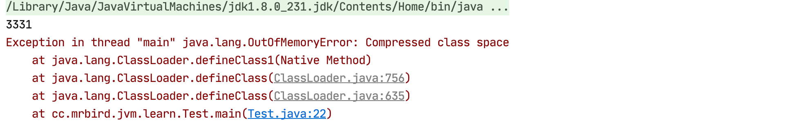
方法区、堆、栈关系
方法区和堆、栈的关系如下图所示：
1 | public class Bird { |
方法区内部结构
方法区内部主要存储了以下内容（不同JDK版本内容有所不同，具体参考下面“方法区演进”）：
类型信息
对每个加载的类型（类class、接口 interface、枚举enum、注解 annotation），JVM必须在方法区中存储以下类型信息：
- 这个类型的完整有效名称（包名.类名）；
- 这个类型直接父类的完整有效名（interface和java.lang.Object没有父类）；
- 这个类的修饰符（public，abstract，final）；
- 这个类型直接接口的一个有序列表（一个类可以实现多个接口）。
方法信息
方法信息包含了这个类的所有方法信息（包括构造器），这些信息和其声明顺序一致：
- 方法名称；
- 方法的返回值类型（没有返回值则是void）；
- 方法参数的数量和类型（有序）；
- 方法的修饰符（public，private，protected，static，final，synchronized，native，abstract）；
- 方法的字节码、操作数栈、局部变量表及其大小（abstract和native方法除外）；
- 异常表（abstract和native方法除外）。
域信息
域Field我们也常称为属性，字段。域信息包含：
- 域的声明顺序；
- 域的相关信息，包括名称、类型、修饰符（public，private，protected，static，final，volatile，transient）。
JIT代码缓存
这部分在👇执行引擎中再做说明。
运行时常量池
在上面虚拟机栈的介绍中，我们知道类字节码反编译后，会有一个constant pool的结构，俗称为常量池，所有的变量和方法引用都作为符号引用保存在class文件的常量池里。虚拟机栈的动态链接就是将符号引用（这些符号引用的集合就是常量池）转换为直接引用（符号引用对应的具体信息，这些具体信息的集合就是运行时常量池，存在方法区中）的过程。
静态变量
静态变量就是使用static修饰的域信息。静态变量和类关联在一起，随着类的加载而加载，它们成为类数据在逻辑上的一部分。静态变量也成为类变量，类变量被类的所有实例共享，即使没有类实例时你也可以访问它：
1 | public class Test { |
上面程序运行并不会报空指针异常。
通过final修饰的静态变量我们俗称常量。常量在编译的时候就会被分配具体值：
1 | public class Test { |
通过javap -v -p Test.class查看其字节码：
通过上面的学习我们知道，静态变量（类变量）在类加载过程的初始化阶段才会被赋值。
演示方法区内部结构
下面通过字节码内容来查看上面这些信息，现有如下代码：
1 | public class Test extends Object implements Cloneable, Serializable { |
通过javap -v -p Test.class查看其字节码：
1 | Classfile /Users/mrbird/idea workspace/JVM-Learn/target/classes/cc/mrbird/jvm/learn/Test.class |
方法区的演进
随着JDK的迭代升级，Hotspot中方法区的存储的内容发生了如下变化（上面介绍的方法区的内部结构是经典情况下的，具体还是需要看JDK是什么版本）：
| 版本 | 描述 |
|---|---|
| jdk1.6及之前 | 有永久代（permanent generation），静态变量存放在永久代上 |
| jdk1.7 | 有永久代，但已经逐步“去永久代”，字符串常量池、静态变量移除，保存在堆中 |
| jdk1.8及之后 | 无永久代，类型信息、字段、方法、常量保存在本地内存的元空间，但字符串常量池、静态变量仍然保存在堆中 |
1 | public class StaticObjTest { |
永久代为什么会被元空间替代？因为永久代的大小是很难确定的，如果一个程序动态加载的类过多就很容易触发永久代的Full GC（Full GC代价大，耗时长，影响程序性能）甚至OOM，程序直接奔溃；而元空间和永久代之间最大的区别在于：元空间并不在虚拟机中，而是使用本地内存，这样元空间就基本不会因为触发Full GC和OOM了。
字符串常量池（StringTable）为什么要放到堆中？因为如果将StringTable放在永久代的话回收效率很低，在Full GC的时候才会触发。而Full GC是老年代的空间不足、永久代不足时才会触发。这就导致 StringTable回收效率不高。而我们开发中会有大量的字符串被创建，回收效率低，导致永久代内存不足。放到堆里，能及时回收内存。
方法区垃圾回收
方法区也存在垃圾回收，方法区的垃圾收集主要回收两部分内容：常量池中废弃的常量和不再使用的类型。
执行引擎
类加载器加载的字节码并不能够直接运行在操作系统之上，因为字节码指令不是本地机器指令，执行引擎（Execute Engine）的任务就是讲字节码指令解释为对应平台上的本地机器指令。通俗地讲，执行引擎就是将高级语言翻译为本地机器语言的翻译官。
解释器和JIT编译器
解释器（Interpreter）：JVM在程序运行时通过解释器逐行将字节码转为本地机器指令执行；
JIT编译器（Just In Time Compiler，即时编译器）：解释器的优点是程序一启动就可以马上发挥作用，逐行翻译字节码执行程序。而对于一些高频的代码（如循环体内代码和高频调用方法等），如果每次执行都用解释器逐行将字节码翻译为机器指令的话，势必会造成浪费，所以我们可以通过即时编译器将这部分高频代码直接编译为机器指令然后缓存在方法区中（上面介绍方法区内部组成时提到过JIT代码缓存），以此提高执行效率。和解释器相比，即时编译器的缺点就是编译需要耗费一定时间。
热点代码
hotspot通过两种方式来确定当前代码是否为热点代码：
方法调用计数器：统计方法调用的次数；
回边计数器：统计循环体执行的循环次数。
当一个方法被调用时，会先检查该方法是否存在被JIT编译器编译过的版本，如果存在，则使用编译后的本地代码执行；如果不存在，则将方法的调用计数器加1，然后判断方法调用计数器和回边计数器之和是否超过方法调用计数器的阈值。如果超过，则会向JIT编译器提交一个该方法的代码编译请求。
上面的阈值可以使用-XX:CompileThreshold设定，默认值在Client模式下是1500，在Server模式下是10000。
方法调用计数器统计的并不是方法被调用的绝对次数，而是在一定时间范围内的次数。超过这个时间范围，这个方法计数器就会减少一半，这个过程称为热度衰减，这个时间周期称为半衰周期。可以通过-XX:CounterHalfLifeTime设置半衰周期（单位S），-XX:-UseCounterDecay来关闭热度衰减。
模式设置
默认情况下，hotspot采用混合模式架构（即解释器和JIT编译器并存的架构），我们可以通过下面这些指令来切换模式：
-Xint：完全采用解释器模式执行程序；-Xcomp：完全采用即时编译器模式执行程序，如果即时编译器出现问题，解释器会介入执行；-Xmixed：混合模式。
JIT编译器分类
hotspot内置两种JIT编译器：Client Compiler和Server Compiler，也称为C1编译器和C2编译器。我们可以通过下面这些指令来指定使用哪种JIT编译器：
-client：指定Java虚拟机运行在Client模式下，并使用C1编译器。C1编译器会对字节码进行简单和可靠的优化，耗时短，已达到更快的编译速度；-server：指定Java虚拟机运行在Server模式下，并使用C2编译器。C2编译器进行耗时较长的优化，以及激进优化，虽然编译耗时更长，但代码执行效率更高（64位JDK只支持Server模式）。
参考文章：
https://www.oracle.com/webfolder/technetwork/tutorials/obe/java/gc01/index.html
https://docs.oracle.com/en/java/javase/11/tools/java.html
https://docs.oracle.com/javase/8/docs/technotes/tools/unix/java.html